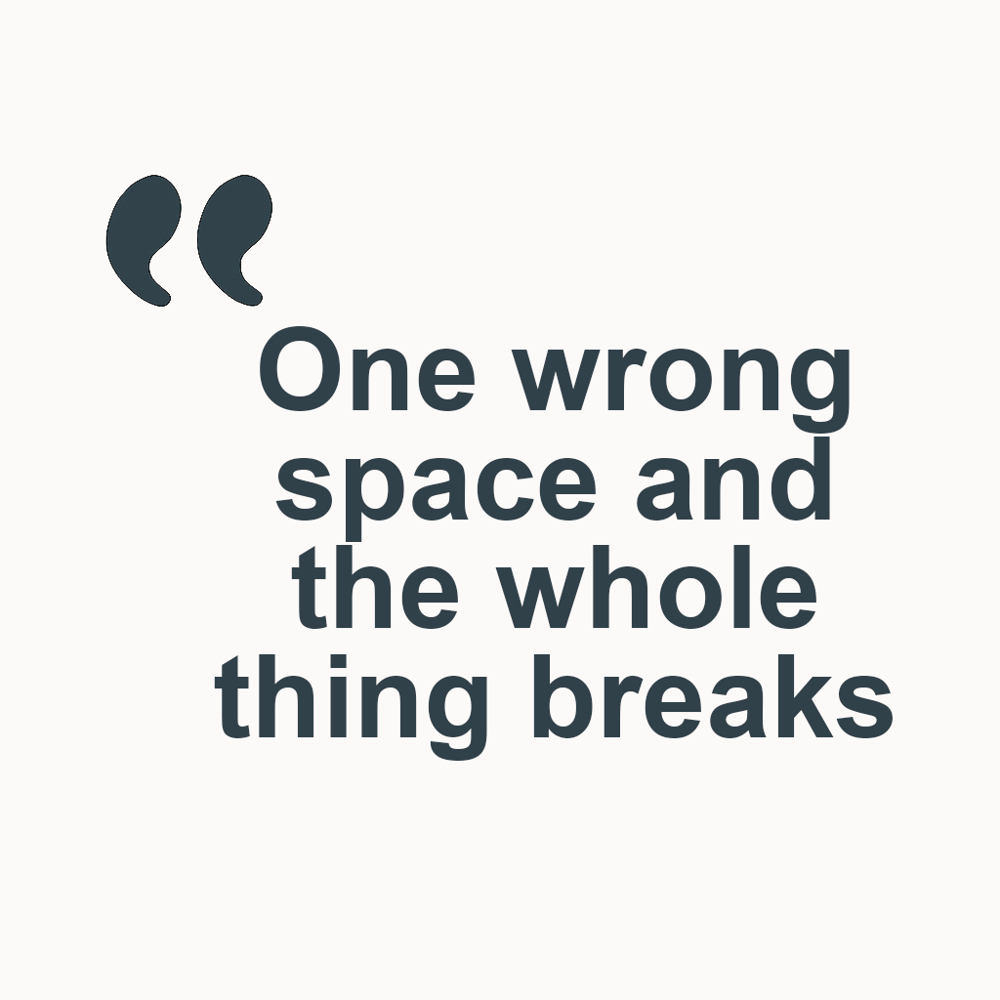
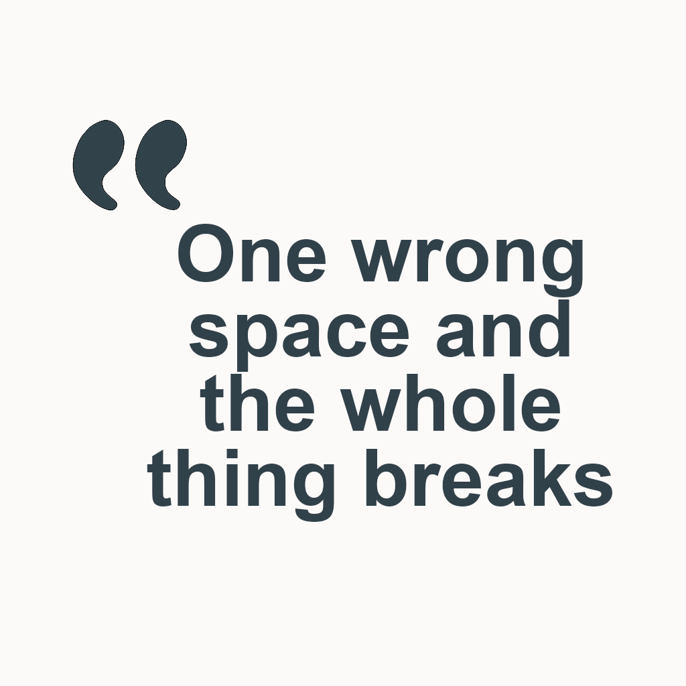

Internal Tooling Improvement — JSON/YAML Form Template
Overview: This project focused on improving internal developer workflows by addressing recurring issues related to the creation and editing of JSON and YAML files — a task that, despite being routine, was prone to frequent errors.
Discovery & Research
Through observation and informal conversations, I identified a surprising pain point among developers: repeated typos, syntax errors, and formatting issues while manually creating or editing JSON and YAML files. While developers were familiar with the formats, the manual process was tedious and error-prone, especially under time pressure.
 

Journey Mapping & Workflow Analysis
I mapped the existing user flows and pinpointed where inefficiencies existed. This clarified where time was being lost and where users were confused or frustrated.
Collaborative Ideation & Design Exploration
To better understand the workflow, I created user journey maps that captured how developers interacted with these files in their day-to-day tasks. I also developed user personas based on different levels of technical confidence and frequency of use.
The statement of How might we modernize the legacy SaaS interface to improve usability without disrupting existing workflows?
User Research & Journey Mapping
To better understand the workflow, I created user journey maps that captured how developers interacted with these files in their day-to-day tasks. I also developed user personas based on different levels of technical confidence and frequency of use.
Identifying Pain Points
By mapping out their processes, I was able to pinpoint where errors were occurring — most commonly during initial file creation and while making manual updates. These issues often led to delays, broken integrations, and unnecessary rework.
Solution Design
Based on the identified pain points, I designed a reusable form-based template to standardize JSON and YAML creation. The form guided developers through required fields, reduced the likelihood of typos, and automated consistent formatting.
Pilot & Rollout
I trialled the form with a small group of developers on the floor to gather early feedback and ensure it integrated smoothly into their existing workflows. Following a successful pilot, the template was adopted across the wider team.
Outcome
The solution significantly reduced formatting errors and improved overall efficiency in creating structured data files. It also increased developer confidence by removing repetitive, error-prone tasks and replacing them with a structured, guided process.